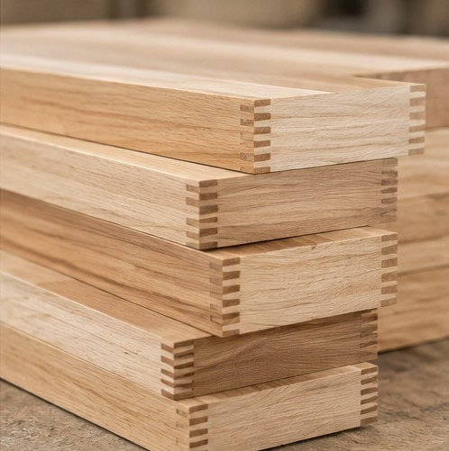
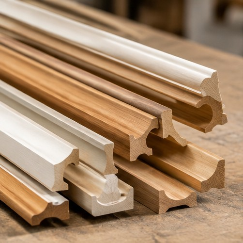
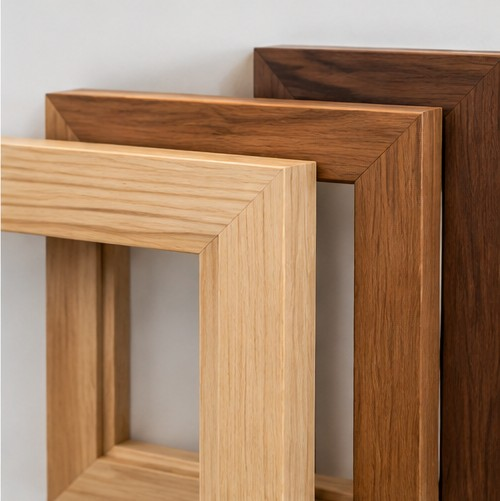
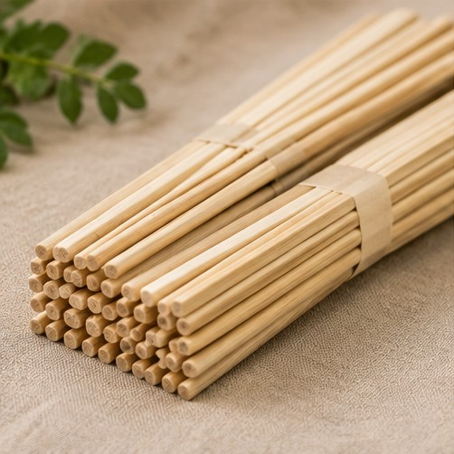
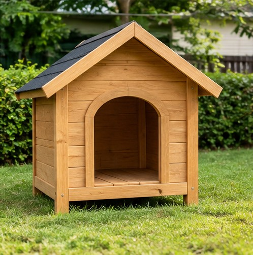

KARAKTERISTIK
Sambungan Presisi
Menggunakan profil sambungan berbentuk jari untuk menghubungkan beberapa potongan kayu menjadi komponen yang lebih panjang.
PT PATI KARYA PALEMBANG
Komponen kayu bersambung presisi untuk kebutuhan furnitur, komponen interior, dan aplikasi pengerjaan kayu.

KATEGORI PRODUK
Finger Jointing merupakan produk komponen kayu yang dibuat dengan menggabungkan beberapa potongan kayu melalui sambungan berbentuk jari. Proses penyambungan ini menghasilkan komponen dengan panjang yang dapat disesuaikan untuk berbagai kebutuhan furnitur, interior, dan pengerjaan kayu.
Jenis material, ukuran penampang, panjang komponen, bentuk akhir, dan jumlah pesanan dapat dikonfirmasi sesuai kebutuhan pelanggan.
INFORMASI PRODUK
Informasi mengenai karakteristik, penggunaan, dan proses pengerjaan komponen kayu dengan sambungan finger joint.
KARAKTERISTIK
Menggunakan profil sambungan berbentuk jari untuk menghubungkan beberapa potongan kayu menjadi komponen yang lebih panjang.
APLIKASI
Dapat digunakan sebagai komponen furnitur, elemen interior, rangka ringan, trim, serta berbagai kebutuhan pengerjaan kayu.
PROSES & MUTU
Proses pengerjaan memperhatikan persiapan material, pembentukan profil sambungan, penggunaan perekat, kerapatan sambungan, kelurusan, dan kondisi permukaan hasil akhir.
PT PATI KARYA PALEMBANG
Diskusikan kebutuhan spesifikasi, ukuran, dan jumlah Finger Jointing bersama PT Pati Karya Palembang.
PRODUK LAINNYA

Profil kayu untuk interior dan furnitur, termasuk elemen dekoratif yang membantu menghasilkan detail ruang yang rapi.
Lihat produk ↗
Produk bingkai kayu dengan perhatian pada permukaan, kerapian sudut, dan hasil akhir.
Lihat produk ↗
Sumpit kayu untuk kebutuhan makan dan layanan pangan, dengan bentuk yang sederhana serta praktis.
Lihat produk ↗
Rumah anjing berbahan kayu untuk kebutuhan hewan peliharaan, dengan desain fungsional dan perlindungan dasar.
Lihat produk ↗